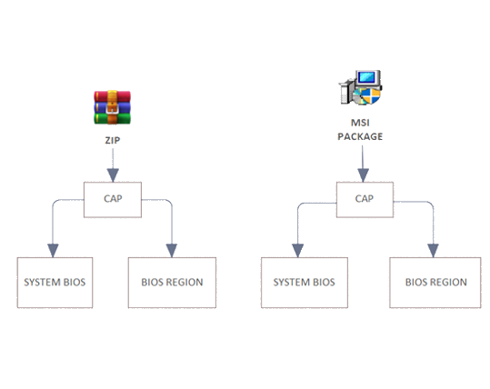
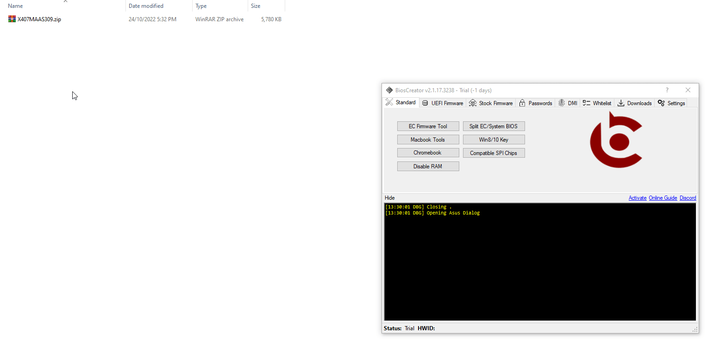
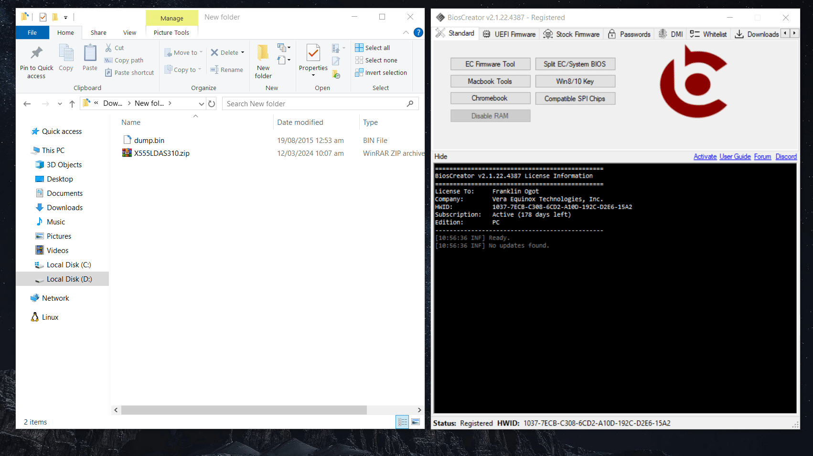
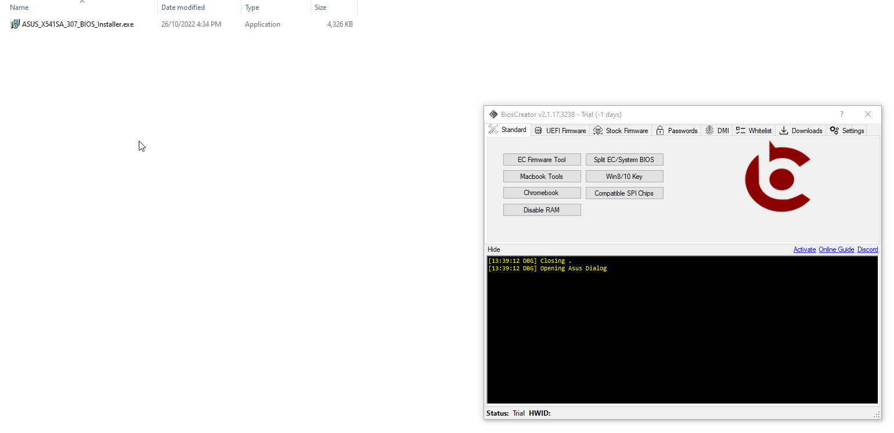
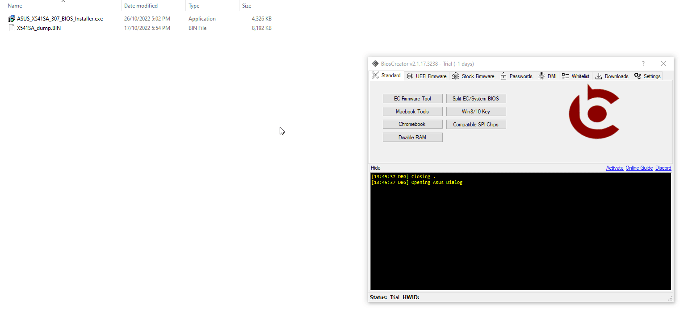

<style>
    .center {
        display: block;
        margin-left: auto;
        margin-right: auto;
        width: 50%;
      }

    a {
      text-decoration: none;
      display: inline-block;
      padding: 8px 16px;
    }
    
    a:hover {
      background-color: #ddd;
      color: black;
    }
    
    .previous {
      background-color: #f1f1f1;
      color: black;
    }
    
    .next {
      background-color: #160042;
      color: white;
    }
    </style>

<section class="support section bg-gray">
	<div class="container">
    <div class="container" style="text-align:justify; margin-bottom:50px;">
      <h4 class="join">Asus</h4>
      <p>Downloadable bios update from <a href="https://www.asus.com/ph/support/Download-Center/">Asus website</a> is commonly packaged as zip/rar. Older bios update can be flashed directly without problem. But be aware that most of the firmware have 800 bytes CAP header. You should remove this before you flash the firmware to your laptop. This step can be accomplished by dragging the extracted firmware to the BiosCreator again.
        <p>There are two common use case for extracting firmware for asus laptops.</p>
            <li>Full stock Firmware - size is a little bit more than the valid firmware size (e.g., 8192kB)</li>
            <li>Bios Region Only - size is way below the valid firmware size (e.g., 6144kB after CAP header is removed)</li>
            <br>
        <p>A flowchart is shown below as a guide for extracting Asus firmwares.</p>
        
<br>
    <div>
        <h2>Procedure for Creating Asus Stock Firmware</h2>
        <ol>
            <li>Download bios update from Asus website.
            <li>Extract the downloaded file using your favorite decompression software or use BiosExtrator (InsydeFlash) to do this.</li>
            <li>Remove CAP header by dragging the extracted file to the BiosCreator.</li>
            <li>Verify if bin file is a complete System Bios or Bios Region only. See the valid file size</li>
            <li>If the bin file is a biosregion only, use the guide in How to replace BIOS Region? section to create a stock firmware.</li>
        </ol>
        
        <p><b>Example 1: Extract Full Stock Firmware for Asus X407M</b></p>
        <br>
        <p>ZIP</p>
        

        <p><b>Example 2: Extract Bios Region Only for Asus X555LD</b></p>
        <br>
        <p>ZIP</p>
        

        <p><b>Example 3: Extract Full Stock Firmware for Asus X541NA</b></p>
        <br>
        <p>EXE</p>
        

        <p><b>Example 4: Extract Bios Region Only for Asus X541SA</b></p>
        <br>
        <p>EXE</p>
        

    <a href="{{ site.baseurl }}/stock-firmware/lenovo" class="previous">&laquo; Previous</a>
    <a href="{{ site.baseurl }}/stock-firmware/dell" class="next">Next &raquo;</a>

		</div> <!-- End row -->
	</div> <!-- End container -->
</section> <!-- End section -->